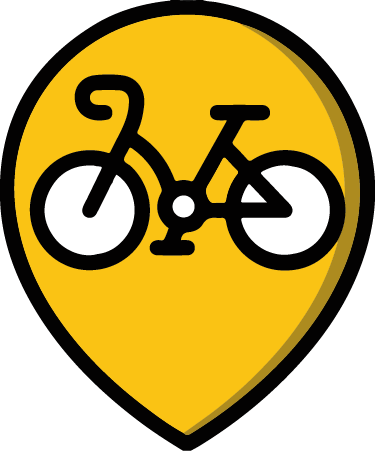

Ruta Padrón - Santiago
Mapa Creado usandoGPS Visualizer Programa de emprego Xuventude Terras de Iria 2023
Por favor, espera mentras se carga o mapa...
Datos da Ruta Padrón-Santiago. Camiño portugués
- Dificultade técnica: Fácil
- Distancia: 25,54 km
- Altitude máxima: 272 m
- Altitude mínima: 4 m
- Tipo de roteiro: Solo ida
Símbolos no mapa
- Inicio da ruta
- Fin da ruta
-  Punto de interese
-
Elevación (m)147.9111.174.337.60.8